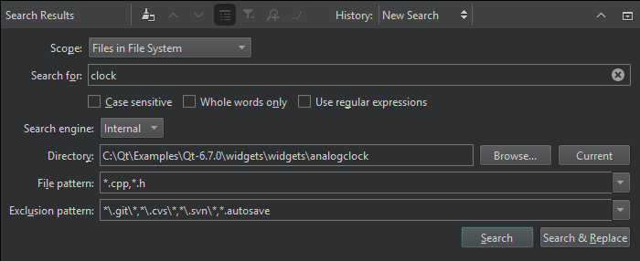
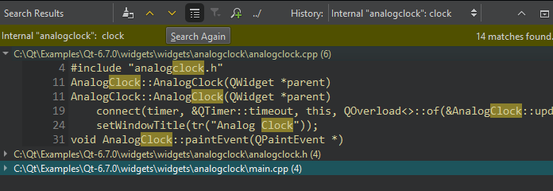

Search Results View
The search scope determines where Qt Creator searches for the search string:
- All Projects searches in all projects.
- Current Project searches in the currently active project.
- Files in All Project Directories recursively searches in all project directories.
- Files in File System recursively searches in the selected directory.
- Current File searches only from the current file.
- Open Documents searches in all open files.
In File pattern and Exclusion pattern, specify file patterns to further restrict the search scope.
The search criteria determine how Qt Creator matches the search string with text and which results it shows:
- To consider case, select Case sensitive.
- To search only whole words, select Whole words only.
- To search using regular expressions, select Use regular expressions.

Viewing Search Results
After you select Search or Search & Replace, the view shows a list of files that have search hits.

To show search hits in the editor:
- To see all occurrences in a file, double-click the file name in the list.
- To go to an occurrence, double-click it.
To repeat the search after you have made changes to the listed files, for example, select Search Again.
Search Results View Toolbar
The toolbar contains options for searching again and navigating search results:
- To clear the search results, select
 (Clear).
(Clear). - To move between instances, select (Next Item) and
 (Previous Item).
(Previous Item). - To expand and collapse the search results, select (Expand All).
- To filter the search results for the usage of symbols according to access type, such as read, write, or declaration, select
 (Filter Tree).
(Filter Tree). - To start a new search, select (New Search).
- If the active project has long paths, select ../ (Show Paths in Relation to Active Project) to show relative paths.
- To show the results of earlier searches, select them in History.
See also View output and How To: Search.